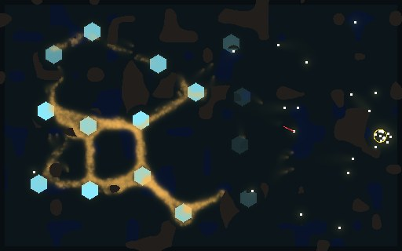
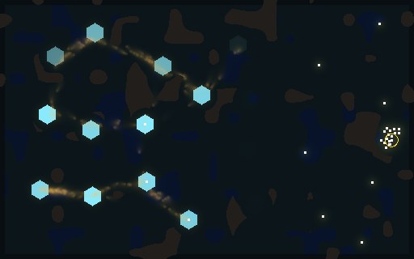
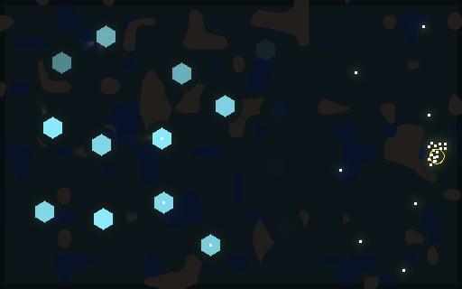
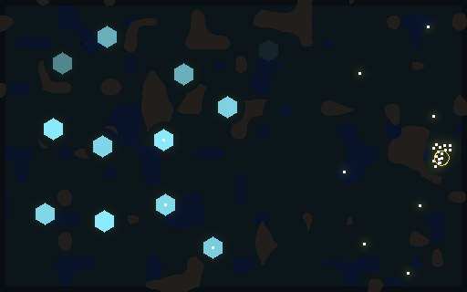
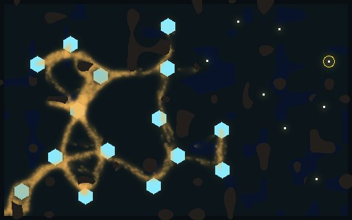
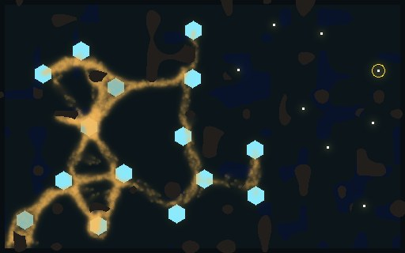
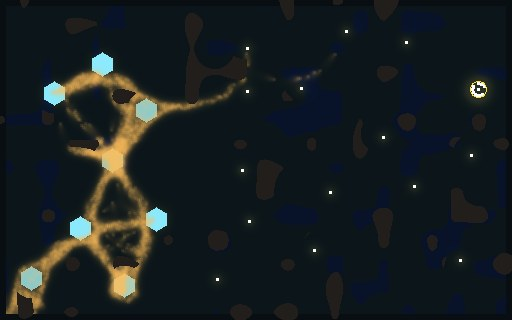
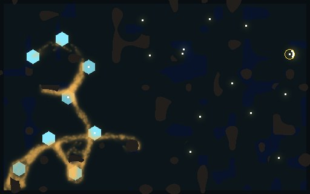

<title>Larder World AI Census</title>
<meta name="claude:viewport-fit-sides" content="cover">
<link rel="stylesheet" href="https://fonts.googleapis.com/css2?family=IBM+Plex+Sans:wght@400;600&family=IBM+Plex+Mono:wght@400;500&display=swap">
<style>
/* Layout: one reading column; each game is a strip of frames with its counts beside it. */
:root {
  --bg: #f3f5f4; --fg: #17201d; --muted: #5a6762; --line: #d3dbd8; --panel: #ffffff;
  --mould: #b07a1e; --crystal: #2a8fa8;
  --sans: "IBM Plex Sans", system-ui, sans-serif; --mono: "IBM Plex Mono", ui-monospace, monospace;
}
@media (prefers-color-scheme: dark) { :root:not([data-theme="light"]) {
  --bg: #0f1513; --fg: #e3ebe7; --muted: #94a39d; --line: #26312d; --panel: #161e1b;
  --mould: #e0a84a; --crystal: #6fd0e8; color-scheme: dark } }
:root[data-theme="dark"] {
  --bg: #0f1513; --fg: #e3ebe7; --muted: #94a39d; --line: #26312d; --panel: #161e1b;
  --mould: #e0a84a; --crystal: #6fd0e8; color-scheme: dark }
body { background: var(--bg); color: var(--fg); font-family: var(--sans); font-size: 15px; line-height: 1.55;
  padding-left: max(16px, env(safe-area-inset-left, 0px)); padding-right: max(16px, env(safe-area-inset-right, 0px)); padding-block: 28px 48px; }
main { max-width: 1040px; margin: 0 auto; display: grid; gap: 32px; }
h1 { font-size: 1.7rem; margin: 0; text-wrap: balance; }
h2 { font-size: 1.15rem; margin: 0 0 6px; text-wrap: balance; }
p { margin: 0; max-width: 68ch; }
.lede { color: var(--muted); }
.game { display: grid; gap: 12px; padding-top: 20px; border-top: 1px solid var(--line); }
.frames { display: grid; grid-template-columns: repeat(auto-fit, minmax(220px, 1fr)); gap: 10px; }
figure { margin: 0; display: grid; gap: 4px; min-width: 0; }
figure img { width: 100%; height: auto; display: block; border-radius: 3px; }
figcaption { font-family: var(--mono); font-size: 12px; color: var(--muted); }
.counts { font-family: var(--mono); font-size: 13px; font-variant-numeric: tabular-nums; display: flex; flex-wrap: wrap; gap: 6px 18px; }
.counts b { color: var(--mould); font-weight: 500; }
.key { font-size: 13px; color: var(--muted); }
.tbl { overflow-x: auto; }
table { border-collapse: collapse; font-family: var(--mono); font-size: 13px; font-variant-numeric: tabular-nums; }
th, td { text-align: left; padding: 5px 14px 5px 0; border-bottom: 1px solid var(--line); }
th { color: var(--muted); font-weight: 500; }
</style>
<main>
  <header style="display:grid;gap:8px">
    <h1>The player AI on the Larder world</h1>
    <p class="lede">Five AI styles play the race world through the player's commands. On held-out seeds 21-36, every style beats idle and random 16 of 16. Boom, claim, late and fort beat the scripted farm hand 15 or 16 of 16. Strike is the gamble: it wiped the mould once, broke it to under 600 walkers on seven more seeds, and lost to farm on five.</p>
    <p class="key">The picture is the world as the engine draws it: slime is gold, crystals are cyan hexagons (dim when drained), soldiers are white squares and the larder is the yellow ring. The score is <code>End::score</code>: a stalemate at the 900 s cap scores the share of contested crystals held minus 0.5, and a win scores above 1.</p>
  </header>

  <section class="tbl">
    <h2>Held out, seeds 21-36</h2>
    <table>
      <tr><th>Hand</th><th>Median</th><th>Wiped / cap / lost</th><th>vs farm</th><th>Best on</th></tr>
      <tr><td>idle</td><td>-0.780</td><td>0 / 8 / 8</td><td></td><td></td></tr>
      <tr><td>random</td><td>-1.786</td><td>0 / 0 / 16</td><td></td><td></td></tr>
      <tr><td>farm (scripted)</td><td>-0.029</td><td>0 / 16 / 0</td><td></td><td></td></tr>
      <tr><td>boom</td><td>+0.175</td><td>0 / 16 / 0</td><td>15-1</td><td>3</td></tr>
      <tr><td>claim</td><td>+0.175</td><td>0 / 16 / 0</td><td>16-0</td><td>6</td></tr>
      <tr><td>late</td><td>+0.173</td><td>0 / 16 / 0</td><td>16-0</td><td>4</td></tr>
      <tr><td>fort</td><td>+0.129</td><td>0 / 16 / 0</td><td>16-0</td><td>0</td></tr>
      <tr><td>strike</td><td>+0.035</td><td>1 / 15 / 0</td><td>11-5</td><td>3</td></tr>
    </table>
  </section>

  <section class="game">
    <h2>Strike, seed 23: the core falls and the mould is wiped at 616 s</h2>
    <div class="counts"><span>score <b>+2.041</b></span><span>soldiers 29</span><span>walkers killed 7,104</span><span>shots 2,371</span><span>farm on this seed +0.000</span></div>
    <div class="frames">
      <figure><figcaption>300 s, farming before the strike at 360 s</figcaption></figure>
      <figure><figcaption>450 s, tubes thinning</figcaption></figure>
      <figure><figcaption>600 s</figcaption></figure>
      <figure><figcaption>616 s, mould wiped</figcaption></figure>
    </div>
  </section>

  <section class="game">
    <h2>Seed 28: the scripted farm hand against claim</h2>
    <div class="counts"><span>farm <b>+0.115</b>: soldiers 8, walkers left 4,640, killed 947</span><span>claim <b>+0.382</b>: soldiers 28, walkers left 2,546, killed 12,147</span></div>
    <div class="frames">
      <figure><figcaption>farm, 600 s</figcaption></figure>
      <figure><figcaption>farm, 900 s cap</figcaption></figure>
      <figure><figcaption>claim, 600 s, claim begins</figcaption></figure>
      <figure><figcaption>claim, 900 s cap</figcaption></figure>
    </div>
  </section>

  <section class="game">
    <h2>Two questions for the score rule</h2>
    <p>Late (a grab 90 s before the cap) ties claim (holding from 10:00) 7-7, because the share is counted only at the cap. And strike left 7 to 574 walkers on six seeds after taking the core, yet those score as stalemates.</p>
  </section>
</main>
